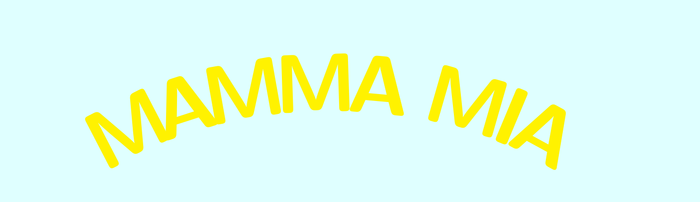

Methods and Automata for Mathematical Models with Arbitrarily Many Interacting Agents
MAMMA MIA brings together researchers working on automata theory, with a particular focus on abstraction of infinite-state systems. The workshop is organized around short talks and extended discussion, with an emphasis on open problems, ongoing work, and the connections between logic, automata, and formal methods. The programme is deliberately compact, leaving ample time for questions and informal exchange between sessions.
For any questions regarding the workshop, please contact the organisers.